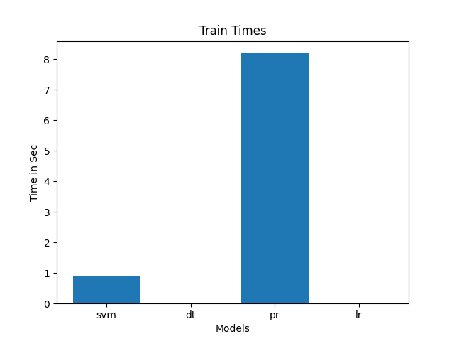
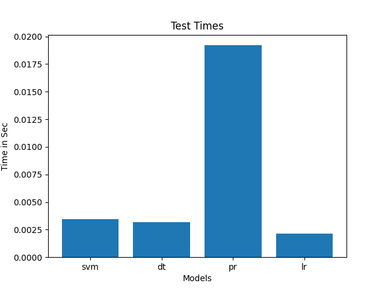
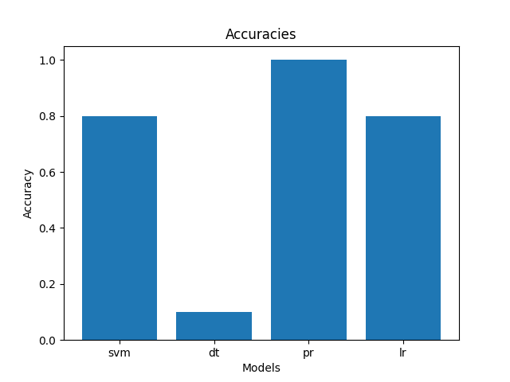

Phase 2 Documents
Classification Result
  
Hyper Params of SVM
| C | Kernel | Accuracy | Reason |
|---|---|---|---|
| 1 | Linear | - | Long time to train |
| 1 | poly | 0 | - |
| 1 | RPF | 0.8 | Medium sample size and Small feature count |
| 0.5 | - | 0.8 | No change due to small test sample |
Conclusion
Applying our basic preprocessing techniques from phase 1 was not enough for this phase. As we have discovered that these techniques were broken and need alot of modificataion. So, we rebuild these techniques from scratch.
What was wrong in the previous preprocessing techniques
- Dropping non-essintial columns insteed of making they all zeros.
- Starting the models without making sure that train and test data have the save columns.